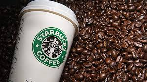
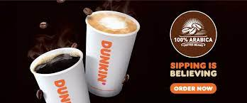
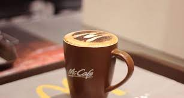
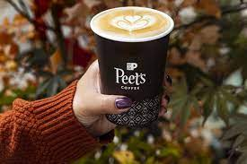
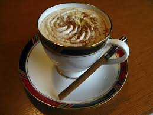
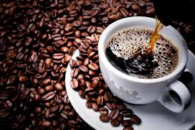

Drink Coffee,Live Forever!
Coffee tastes better when it is strong!
A 2017 review of clinical trials found that drinking coffee is generally safe within usual levels of intake and is more likely to improve health outcomes than to cause harm at doses of 3 or 4 cups of coffee daily.Exceptions include possible increased risk in women having bone fractures , and a possible increased risk in pregnant women of fetal loss or decreased birth weight. Results were complicated by poor study quality, and differences in age , gender, health status , and serving size.
Coffee beans are the seeds of a fruit called a coffee cherry.Coffee cherries grow on coffee trees from a genus of plants called Coffea.there are a wide variety of species of coffee plants ,ranging from shrubs to trees.
|  | 1.Starbucks The brand is not known for sourcing and roasting the best coffee beans . Most of theie coffee beans are dark roasted , meaning ,they taste bitter. And many consumers, who know their coffee, complai that Starbucks coffee has a distinct burnt taste. |
| 2.Dunklin' Doughnuts Dunkin' is not as big a brand as Starbucks but they are second in line in the number of stores.But yes, the coffee Dunkin' offers is surely somewhat superior to Starbucks. |
 |
|  | 3.McCafe Owned by McDonald's, McCafe is one of the leading coffee chains in countries likde Australia & New Zealand. McCafe enjoys the benefit of having a vast presence(Beacause let's face it, McDonald's is everywhere!).As McDonald's expands worldwide,there is a decent chance of McCafe doing the same |
| 4.Peet's Coffee Peet's coffee is said to be fairly stronger than the coffee Starbucks serves,so it might not be for everyone.Peet's has a lomg history of serving darker roasted Arabica coffee. |
 |
|  | ||
|  | |